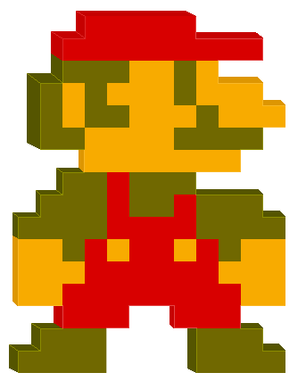

Historian om karaktären Mario
Den 13 september 1985 lanserades företaget Nintendo sitt första mario-spel som kallas för "Super Mario Bros." Den släpptes till en gammal konsol NES (Nintendo Entertainment System)
Mario syntes även tidigare på arkadspelet "Donkey Kong" vid år 1981, denna gången han var snickare och gick under namnet "Mr. Jump Man".
"Super Mario Bros" blev ett av de mest sålda tv-spelen någonsin och har sålt i över 40 miljoner exemplar. Detta kan beräknas som 1 miljarder dollar Nintendo tjänade bara med att sälja spelet för 25$.
Alla vet hur Mario ser ut, men de vet inte varför. Det som hade en stor betydelse för Marios utseende var antal begränsade pixlar och färger i 8-bitar förr i tiden. Det var svårt att få fram detaljerade ansiktsstreck, så det var därför Mario fick en stor, svart och välbekant mustach.
